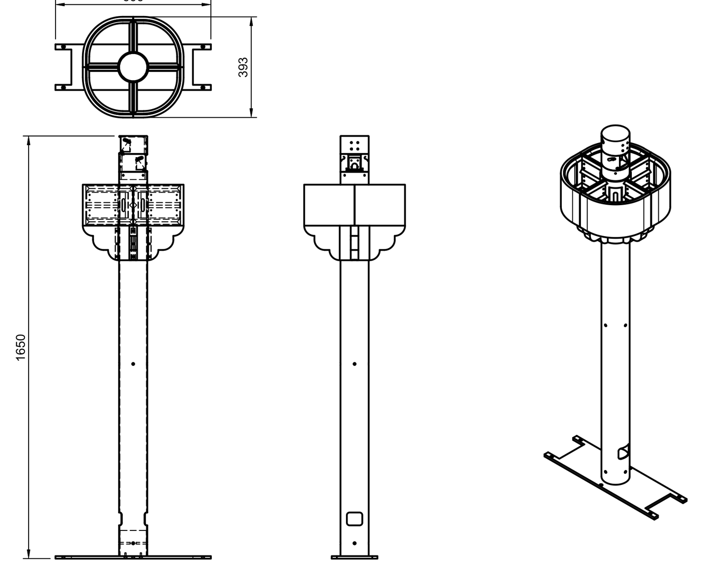

Smart Pole Interaction Unit (SPIU)
2023 – 2026

The Smart Pole Interaction Unit is what my PhD is built around. It stands at the curb, watches the crossing, and tells people on foot when it is their turn, so each car does not have to.
- Years
- 2023 – 2026
- Where
- Tsukada Laboratory, The University of Tokyo · NTNU, Norway
- Award
- CHI 2026 Honourable Mention
Try it on the streetTake the pole apartWatch the video ↗
From first idea to a real street
-
2023the idea
IEEE WF-IoT 2023
Keep Calm and Cross: Smart Pole Interaction Unit for Easing Pedestrian Cognitive Load
The foundational SPIU paper: an infrastructure-side mediator designed to reduce pedestrian cognitive load during single- and multi-vehicle encounters.
-
2023tested in VR
Electronics 2023
Fostering Fuzzy Logic in Enhancing Pedestrian Safety: Harnessing Smart Pole Interaction Unit for Autonomous Vehicle-to-Pedestrian Communication and Decision Optimization
Immersive-VR validation of SPIU and vehicle eHMI, showing faster pedestrian responses across one-way and two-way crossing scenarios.
-
2024think-tank
AutomotiveUI 2024
Transforming Pedestrian and Autonomous Vehicles Interactions in Shared Spaces: A Think-Tank Study on Exploring Human-Centric Designs
A 25-person think-tank study establishing human-centered design principles for integrated SPIU and vehicle eHMI concepts: effectiveness, simplicity, visibility, and clarity.
-
2024experts
ICEA 2024
Connected Shared Spaces: Expert Insights into the Impact of eHMI and SPIU for Next-Generation Pedestrian–AV Communication
Twelve automotive-interface experts evaluated eHMI, SPIU, and their combination across safety, seamlessness, adaptability, accessibility, and trust—clarifying when infrastructure and vehicle interfaces should work together.
-
2025people and LLMs
IJHCS 2025
Towards the Future of Pedestrian–AV Interaction: Human Perception vs. LLM Insights on Smart Pole Interaction Unit in Shared Spaces
A design study with 25 people and three multimodal LLMs comparing human and AI perspectives on roadside AV communication. Participants strongly favored SPIU for coordinating multi-vehicle encounters.
-
2025Japan and Norway
VRST 2025
A Silent Negotiator? Cross-cultural VR Evaluation of Smart Pole Interaction Units in Dynamic Shared Spaces
A cross-cultural VR study (N=40) across Japan and Norway examining four high-risk shared-space scenarios. SPIU shortened decisions while revealing scenario- and culture-dependent effects.
-
2026on a real street
CHI 2026 🏆 Honourable Mention
Don't Worry, Just Follow Me: Prototyping and In-the-Wild Evaluation of Smart Pole Interaction Unit with Mobility
An in-the-wild study (N=21) of a mobile roadside interface delivering explicit WALK/STOP guidance. Combining SPIU with vehicle eHMI produced the clearest, safest, and most trusted experience.


How the pole was built



With
Chia-Ming Chang · Ehsan Javanmardi · Takeo Igarashi · Manabu Tsukada · Jin Nakazato · Anubhav · Kantaro Fujiwara · Alex Orsholits · Pengfei Lin · Xiang Su · Koki Toda · Robin Sidhu · Yu Asabe · Kanta Tanaka · Mark Colley · Xinyue Gui · Ding Xia